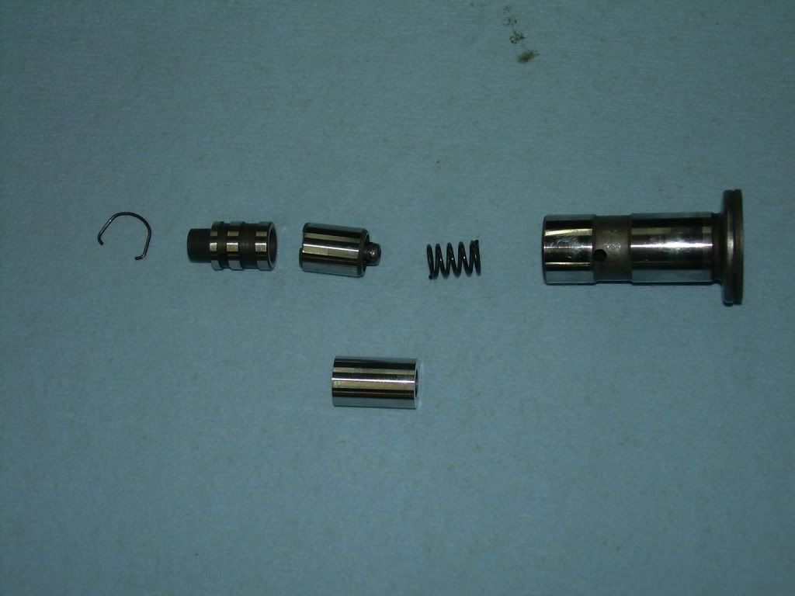
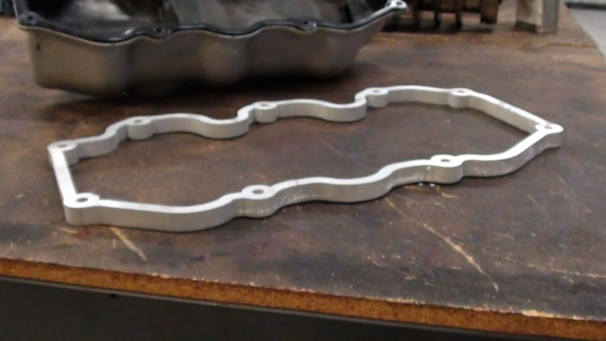

-
I'm having roller rockers made, roller tip, bushed on the shaft. threaded adjusters with a swivel foot (hopefully). Already have inserts made for the lifters to convert to solid. Already have the valve cover spacers made. Designed mainly for higher lift, my cam is .544" lift, and open up the possibilities for better lobe designs. Although the heads stall at .425" lift, they can be ported to gain flow to .750" lift (making good use of higher lift cams). Was wondering if anyone else would be interested, possible group buy? Price point should be around $850 for the kit, possibly less if I can order enough of sets of rockers. Here are a couple of pics.

 -
Re: High lift, solid flat tappet, roller rocker conversion k
Good job, I'm not really in the market but this is very coolDD:
86 Black Turbo 5spd
The Fallen:
84 red n/a auto Slicktop, 86 Black 2+2 n/a 5spd
Parting Currently:
86 White Turbo 5spd, 88 n/a 5spd, 84 AE, 88 Shiro #64
Garage Sale -
Re: High lift, solid flat tappet, roller rocker conversion k
THIS would be the way to go for anyone wanting to shim their lifters. The way I did it was very tedious.
So to be clear, the kit consists of what again?85 Z31 6.0 LSX turbo 766whp/792wtq
04 GTO, LS6, big cam, porting, N20… underway for summertime daily driver. -
Re: High lift, solid flat tappet, roller rocker conversion k
Kit will consist of 2 valve cover spacers with longer bolts for the valve covers, 12 lifter inesrts, and roller tip rockers. -
Re: High lift, solid flat tappet, roller rocker conversion k
Seems to be a very fair price for the kit. Seeing as the company in Australia wants $1540 for a set of rockers. Do you have any pictures of the rockers you are having made?…and how much HP do you have at 0 boost -
Re: High lift, solid flat tappet, roller rocker conversion k
Not yet. Custom Speed Parts is making them (aka Harland Sharp). Probably late january before they finish them. Should be very good quality pieces. Inserts are Smith Brothers, also very good quality stuff. Spacers are local source. I will share the part numbers and contact info after the kit is complete. Not looking to make money, just further the development of the vg platform. -
Re: High lift, solid flat tappet, roller rocker conversion k
From what I've seen, VG swaps into other cars are increasing, not just a Z31 thing anymore. It'd be a great idea to advertise this other places, if you haven't already. IMOa22770 wrote: Not yet. Custom Speed Parts is making them (aka Harland Sharp). Probably late january before they finish them. Should be very good quality pieces. Inserts are Smith Brothers, also very good quality stuff. Spacers are local source. I will share the part numbers and contact info after the kit is complete. Not looking to make money, just further the development of the vg platform.- VG30DET (HE341) 86 300ZX - 1982 280ZX Turbo - Headered NA 1986 300ZX 2+2 - 2000 Xterra - -
Re: High lift, solid flat tappet, roller rocker conversion k
I am very interested in seeing how your conversion kit turns out!!! Sounds like a very sweet conversion!! -
Re: High lift, solid flat tappet, roller rocker conversion k
Just curious, how much for just the lifter spacers, without rocker arms or valve cover spacer? -
Re: High lift, solid flat tappet, roller rocker conversion k
The lifter shims would require an adjustable rocker arms though. You can't use these shims any other way. Shims would be different if you are only shimming the lifters. -
Re: High lift, solid flat tappet, roller rocker conversion k
How much for the valve cover spacers? Any new pics yet? -
Re: High lift, solid flat tappet, roller rocker conversion k
I'll double check the prices tonight. I think the lifter inserts were about $8 each, and the valve cover spacers were about $130-140 range for the set with bolts. They say they are almost finished designing the rockers. May be slightly higher than originally expected, no extrusions to make them from, so will have to be made from billet. -
Re: High lift, solid flat tappet, roller rocker conversion k
Any Updates??? -
Re: High lift, solid flat tappet, roller rocker conversion k
How does the valve cover spacer work? Gasket on both sides?
1986 300ZX Turbo…sold
1990 Skyline GT-R…new money pit
2014 Juke Nismo RS 6-speed…daily -
Re: High lift, solid flat tappet, roller rocker conversion k
No updates yet, rockers are designed but not manufactured. The valve cover spacer uses silicone on head side and stock gasket on the valve cover side. Got one on my motor right now with 6k miles and no leaks at all.

Copyright © 2006–. All rights reserved. Privacy Policy